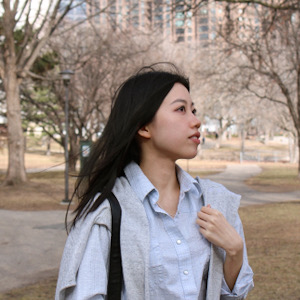

My Second Coding Assignment
About Me

Academic Background
Hello everyone! My name is Zoey Nguyen and I currently live in north Minneapolis, Minnesota. I graduated in 2022 with a BA in Graphic Design from St Cloud State University and now I am a lead Production Designer at a publishing company in White Bear Lake, MN.
Hobbies/Interests
Exploring new travel destinations
Trying out film photography
Playing badminton
Practicing slow living
Spending time with my family members and beloved girl cat Moey (Visit Moey's profile here)
Career Goals
- Diversified skill set: Adding web design & development to my existing design skills creates a versatile skill set and leads to personal growth.
- Competitive advantage: Skills obtained from the program sets me apart from other graphic designers and makes my service more comprehensive, which enhances my earning potential.
- Staying current with the industry trends